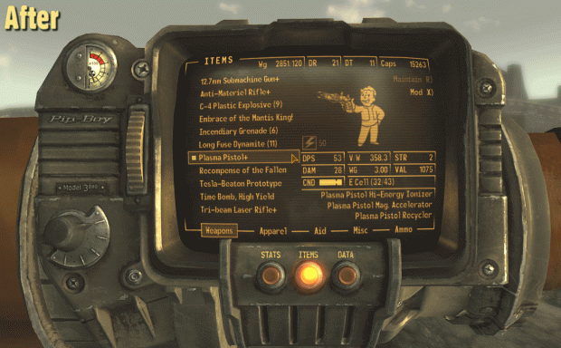
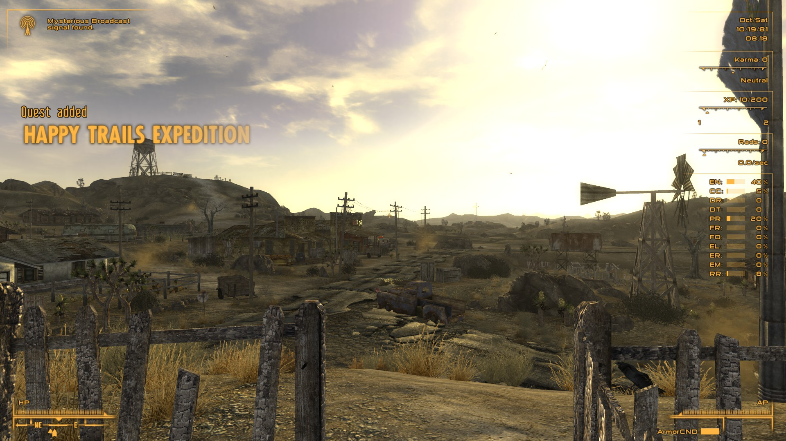
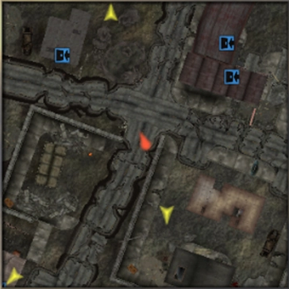

| Mod Name | Description | Instructions |
|---|---|---|
The Mod Configuration Menu(a.k.a. MCM) |
|
Normal MO2 installation.
Also install the Optional File* MCM BugFix 2 normally through MO2, clicking when you do. |
Universal Interface Organizer(a.k.a. UIO) |
Required for UI mods to coexist. | Normal MO2 installation. |
Vanilla UI Plus(a.k.a. VUI+) |

|
Normal MO2 installation.
Choose this if you like the original style of the UI, but just wish it was better designed for modern screens and could fit more stuff comfortably without bugging out. Download our Custom Settings and install as a new mod in MO2. This will enable: |
Darnified UI(a.k.a. DarnUI)(or just Darn) |

|
Manual download and install.
Choose this if you want something different, or find VUI+ too big. This is an alternative to VUI+; don't try to use both at the same time! Be sure to read the thread carefully! Darnified UI requires special font tweaks to install correctly. |
Vanilla HUD Cleaned |
High-quality HUD (use with VUI+). | Normal MO2 installation. Not compatible with Darn. |
Consistent Pip-Boy Icons |
High-quality icons that are used for perks, items, etc. | Normal MO2 installation.
Grab any of the optional files you like as well, and them into the main mod. |
JIP Minimap |

Customizable realtime minimap that appears on the HUD. |
Normal MO2 installation. Configure in MCM.
This mod has some minor issues with certain mods such as Unfound Loot. It's nothing gamebreaking, but do be advised. |